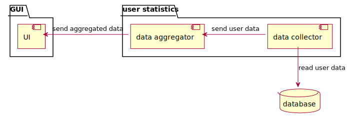
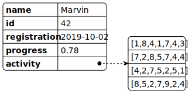

software design and architecture stack

gang of four (GoF) design patterns
- GoF: Erich Gamma, Richard Helm, Ralph Johnson, and John Vlissides
- 23 common software design patterns
- published in “Design Patterns: Elements of Reusable Object-Oriented Software” (1994) (Gamma et al., 1994)
- provides solutions to common design problems
- categorized into three main groups
- creational
- structural
- behavioral
the 23 (GoF) design patterns
creational
- Factory Method
- Abstract Factory
- Builder
- Prototype
- Singleton
structural
- Adapter
- Bridge
- Composite
- Decorator
- Facade
- Flyweight
- Proxy
behavioral
- Chain of Responsibility
- Command
- Interpreter
- Iterator
- Mediator
- Memento
- Observer
- State
- Strategy
- Template Method
- Visitor
read about the design patterns in details, for example at refactoring.guru
bridge pattern (structural)


GoF design patterns in functional programming
| OO pattern | FP pattern |
|---|---|
| factory pattern | function |
| strategy pattern | function |
| decorator pattern | function |
| visitor pattern | function |
| … | … |
Peter Norvig demonstrated that 16 out of the 23 patterns are simplified or eliminated by language features in Lisp or Dylan (1998) (Norvig, 1998)
more about it from Scott Wlaschin (Wlaschin, 2014)
You aren’t gonna need it (YAGNI)
- states that a programmer should not add functionality until deemed necessary
- principle originates from extreme programming (XP)
Always implement things when you actually need them, never when you just foresee that you need them.
extreme programming
- advocates frequent releases in short development cycles
- intended to improve productivity and introduce checkpoints at which new customer requirements can be adopted
- features
- programming in pairs,
- doing extensive code review,
- unit testing of all code,
- not programming features until they are actually needed,
- flat management structure
- considered a type of agile software development
SOLID principles
SOLID is a mnemonic acronym for five design principles intended to make object-oriented designs more understandable, flexible, and maintainable (Wikipedia contributors, 2024d)
- single responsibility principle
- open-closed principle
- Liskov substitution principle
- interface segregation principle
- dependency inversion principle
- introduced by Robert C. Martin
- in his 2000 paper Design Principles and Design Patterns about software rot
- the SOLID acronym was coined around 2004 by Michael Feathers
- https://www.freecodecamp.org/news/solid-principles-explained-in-plain-english/
- https://devopedia.org/solid-design-principles#Merson-2020
single responsibility principle
a class should do one thing and therefore it should have only a single reason to change
Unix philosophy
Make each program do one thing well. To do a new job, build afresh rather than complicate old programs by adding new “features”.
advantages
- testing is easier
- fewer test cases required
- less dependencies
- to other modules or classes
open-closed principle
classes should be open for extension and closed to modification

class Shape:
pass
class Square(Shape):
def __init__(self, width: float):
self.width = width
class Circle(Shape):
def __init__(self, radius: float):
self.radius = radius
class AreaCalculator:
def sum(self, shapes: list[Shape]) -> float:
result = 0
for shape in shapes:
if isinstance(shape, Square):
result += shape.width**2
elif isinstance(shape, Circle):
result += shape.radius**2 * math.pi
return round(result, 2)
example based on (Oloruntoba & Walia, 2024)
open-closed principle

class Shape:
pass
class AreaInterface:
def area(shape: Shape) -> float:
pass
class Square(Shape, AreaInterface):
def __init__(self, width: float):
self.width = width
def area(self) -> float:
return self.width**2
class Circle(Shape, AreaInterface):
def __init__(self, radius: float):
self.radius = radius
def area(self) -> float:
return round(self.radius**2 * math.pi, 2)
class AreaCalculator:
def sum(self, shapes: list[Shape]) -> float:
return sum([i.area() for i in shapes])
example based on (Oloruntoba & Walia, 2024)
Liskov substitution principle
if class A is a subtype of class B, B should be able to replaced with A without disrupting the behavior of the program (Millington, 2019)
- named after Barbara Liskov
- presented first in 1987 (Liskov, 1987)
- circle-ellipse problem / square–rectangle problem
- existence of the circle–ellipse problem is used to criticize object-oriented programming (Wikipedia contributors, 2023)
Liskov substitution principle - example
class Rectangle:
def __init__(self, width: int, height: int):
self.__width = width
self.__height = height
def setWidth(self, width: int):
self.__width = width
def setHeight(self, height: int):
self.__height = height
def getWidth(self):
return self.__width
def getHeight(self):
return self.__height
def getArea(self):
return self.__width * self.__height
class Square(Rectangle):
def __init__(self, width: int):
super().setWidth(width)
super().setHeight(width)
def setWidth(self, width: int):
super().setWidth(width)
super().setHeight(width)
def setHeight(self, height: int):
super().setWidth(height)
super().setHeight(height)
>>> r = Rectangle(2, 3)
>>> print(r.getArea())
6
>>> s = Square(2)
>>> print(s.getArea())
4
code is based on (Erinç, 2020)
Liskov substitution principle - example
def getAreaTest(r: Rectangle):
width = r.getWidth() # width is 2
r.setHeight(10)
return f"Expected area of {width * 10}, got {r.getArea()}"
>>> r = Rectangle(2, 3)
>>> print(r.getArea())
6
>>> s = Square(2)
>>> print(s.getArea())
4
>>> print(getAreaTest(r)) # rectangle
Expected area of 20, got 20
>>> print(getAreaTest(s)) # square
Expected area of 20, got 100
this example violates the Liskov substitution principle
code is based on (Erinç, 2020)
interface segregation principle
states that many client-specific interfaces are better than one general-purpose interface. Clients should not be forced to implement a function they do no need.

example based on (Oloruntoba & Walia, 2024)
dependency inversion principle
Dependency inversion principle says that modules should depend upon interfaces or abstract classes, not concrete classes. It’s an inversion because implementations depend upon abstractions and not the other way round. (Millington, 2019)

increases reusability
hollywood principle (inversion of control)
don’t call us, we’ll call you
- for control flow management
- IoC shifts control from the application to an outside framework
- promotes a more modular design by decoupling components
- however, adding an IoC framework can increase complexity
- with a significant learning curve for those unfamiliar with the concept
- however, adding an IoC framework can increase complexity
- e.g., Spring Framework, ASP.NET Core
based on (Stec, 2024)
coupling
- the degree of interdependence between software modules
- coupling is usually contrasted with cohesion
- low coupling often correlates with high cohesion, and vice versa

{kind=link}
source Wikipedia (Wikipedia contributors, 2024a)
topologies
Object-oriented design (OOD) is the process of planning a system of interacting objects to solve a software problem (Wikipedia contributors, 2024c).
control flow? structure?


{kind=link}
server/client architecture
- consists of two parts
- client and server
- distributed
- always the client initiates a connection to the server
- while the server process always waits for requests from any client
message bus
- shared communication channel that connects multiple components or services
- simple, extensible


message bus types
models
- publish-subscribe model
- messages are published to a specific topic, and all subscribed receivers receive those messages
- one to many
- point-to-point model
- messages are sent directly from a sender to a specific receiver, ensuring that only that recipient processes the message
- one to one
delivery guaranties
- at most once
- push based
- no retries
- at least once
- delivery confirmation
- (typically) pull based
- exactly once
- at least once, extended by guarantee that there will be no duplicates
based on (Okeyo, 2023) and (Inc., 2022)
https://www.inngest.com/blog/message-bus-vs-queues
layered
number of layers in a layered architecture is not set to a specific number
- presentation layer (a.k.a. UI layer, view layer)
- responsible for user interactions with the software system
- application layer (a.k.a. service layer)
- aspects related to accomplishing functional requirements
- business (logic) layer
- responsible for algorithms, and programming components
- data access layer (a.k.a. persistence layer)
- responsible for handling data, databases

layered - properties
advantages
- simple and easy to learn and implement
- reduced dependency because the function of each layer is separate from the other layers
- testing is easier because of the separated components
- components can be tested individually
- cost overheads are fairly low
disadvantages
- scalability is difficult
- not well-suited for large projects
- can be difficult to maintain
- a change in a single layer can affect the entire system because it operates as a single unit
- a layer depends on the layer above it
based on (baeldung, 2021)
onion architecture
- popularized by Jeffrey Palermo
- code can depend on layers more central, but code cannot depend on
layers further out from the core
- all coupling is toward the center
- the database is not the center, it is external
- the data model is in focus, whereas in layered data is the foundation
- relies on the dependency inversion principle
- appropriate for long-lived business applications
- also applications with complex behavior

based on (Palermo, 2008)
hexagonal - motivation
- invented by Alistair Cockburn (Cockburn, 2010)
- application should be equally controllable by users, other
applications, or automated tests
- for the business logic, it makes no difference whether it is invoked from a user interface, a REST API, or a test framework
- infrastructure modernization should be possible without changing the business logic

based on (Woltmann, 2023)
hexagonal (ports & adapters)
advantages
- modifiability
- isolates responsibilities
- once the ports are defined, the work on the components can be divided among developers
disadvantages
- the effort of port-adapter implementation is non-negligible
- for smaller applications, the extra effort is not worth it
- hexagonal architecture does not specify what is inside the application hexagon
- represents a single design decision:
- wrap your application in an API and put tests around it
based on (Woltmann, 2023)
hexagonal vs. layered


can be extend without changing the business logic
it is very similar to the onion and (the clean architecture (Martin, 2012))
based on (Woltmann, 2023)
the clean architecture

- by Robert C. Martin (Martin, 2012), unifies onion or hexagonal, etc.
- source code dependencies can only point inwards
- relies on dependency inversion principle
- the number of circles is flexible
Model-View-Controller (Wikipedia contributors, 2024b)
- architectural pattern
- MVC pattern was implemented as early as 1974 in the Smalltalk project
- view is responsible for rendering UI
- controller responds to the user input and performs interactions on the data model
- model is responsible for managing the data
- the view and the model are tightly coupled
- view is monolithic and usually couples tightly with the UI framework
- unit testing the view becomes difficult

MVC - MVP - MVVM
ASP.NET, Django (Python), Ruby on Rails, Laravel (PHP)

Windows Forms, Java Swing

WPF, AngularJS
figures based on (Pedamkar, 2023)
other alternatives: Alternatives To MVC - by Anthony Ferrara
user statistics example
as a user I want to see my activity to see my progress
display user statistics including
- username
- profile image
- registration date
- progress in course
- daily activity in the current month

architecture v1

send everything to the UI

architecture v1 - class

in this case the UI has to calculate the daily activity
- tight coupling
- single responsibility principle violated
architecture v2

send only the aggregated data

architecture v2 - class
data collector still has the whole user data but that aligns with its purpose
data aggregator calculates everything and the UI only displays it
architecture v2.1 - class


UI might be on a client
different code base, different language
architecture v3

make the database aggregate the data
architecture v3 - SQL
for the activity matrix:
SELECT
CAST(strftime('%W', timestamp) AS INTEGER) AS week_of_year,
CAST(strftime('%u', timestamp) AS INTEGER) AS day_of_week,
count(*) AS count
FROM activity
WHERE
user_id = 42 AND
week_of_year > 35 AND
week_of_year < 40
GROUP BY
week_of_year,
day_of_week
;
architecture v3 - SQL

for the progress:
SELECT
lesson / 50.0 AS progress
FROM activity
WHERE
user_id = 42 AND
result = 'success'
ORDER BY
lesson DESC
LIMIT 1;
architecture v3 - issues
- hard dependency on database
- business logic in persistence layer
- code depends on the SQL dialect
- can be mitigated with an object-relational mapping (ORM) framework but that would also be a dependency
- may not suitable for complex aggregations
- stored functions just increase dependency
- harder to unit test
on the other hand, most of these are present in all the three architectures!
record architecture decisions
in each architecture decision record, write these sections:
# Title
## Status
What is the status, such as proposed, accepted, rejected, deprecated, superseded, etc.?
## Context
What is the issue that we're seeing that is motivating this decision or change?
## Decision
What is the change that we're proposing and/or doing?
## Consequences
What becomes easier or more difficult to do because of this change?
ADR template by Michael Nygard from Documenting architecture decisions
You can use adr-tools to manage the markdown based (Nygard stlye) the ADR files.
why write ARDs?
- they’re not for you, they’re for the future you
- ADRs capture the decision at the time it’s being made
- on a meeting, on Slack, Teams, Zoom, etc.
- like a structured memo
- ADRs capture the decision at the time it’s being made
- they’re not for you, they’re for your peers
- ADRs help your teammates understand why the feature is built the way
it is and not built some other way
- alternatives considered and pros/cons within the ADRs
- ADRs help your teammates understand why the feature is built the way
it is and not built some other way
- they’re not for you, they’re for your future peers
- writing down decisions help communicate to your current teammates, but also those who will join later
- it is an asynchronous way of communication, no need for a Zoom call, which reduces interruption

based on Why Write ADRs by Eli Perkins
references
baeldung. (2021). Layered architecture. https://www.baeldung.com/cs/layered-architecture .
Cockburn, A. (2010). Hexagonal architecture. https://alistair.cockburn.us/hexagonal-architecture/ .
Erinç, Y. K. (2020). The SOLID principles of object-oriented programming explained in plain english. https://www.freecodecamp.org/news/solid-principles-explained-in-plain-english/ .
Gamma, E., Helm, R., Johnson, R., & Vlissides, J. (1994). Design patterns: Elements of reusable object-oriented software. Pearson Education. https://books.google.hu/books?id=6oHuKQe3TjQC
Inc., I. (2022). Message queue vs message bus: The practical differences. https://www.inngest.com/blog/message-bus-vs-queues .
Liskov, B. (1987). Keynote address - data abstraction and hierarchy. SIGPLAN Not., 23(5), 17–34. https://doi.org/10.1145/62139.62141
Martin, R. C. (2012). The clean architecture. https://blog.cleancoder.com/uncle-bob/2012/08/13/the-clean-architecture.html .
Millington, S. (2019). A solid guide to SOLID principles. https://www.baeldung.com/solid-principles .
Norvig, P. (1998). Design patterns in dynamic languages. http://www.norvig.com/design-patterns/ .
Okeyo, B. (2023). A beginners guide to understanding message bus architecture. https://dev.to/billy_de_cartel/a-beginners-guide-to-understanding-message-bus-architecture-22ec .
Oloruntoba, S., & Walia, A. S. (2024). SOLID: The first 5 principles of object oriented design. https://www.digitalocean.com/community/conceptual-articles/s-o-l-i-d-the-first-five-principles-of-object-oriented-design .
Palermo, J. (2008). The onion architecture : Part 1. https://jeffreypalermo.com/2008/07/the-onion-architecture-part-1/ .
Pedamkar, P. (2023). MVC vs MVP vs MVVM. https://www.educba.com/mvc-vs-mvp-vs-mvvm/ .
Stec, A. (2024). Inversion of control. https://www.baeldung.com/cs/ioc .
Stemmler, K. (2019). How to learn software design and architecture. https://khalilstemmler.com/articles/software-design-architecture/full-stack-software-design .
Wikipedia contributors. (2023). Circle–ellipse problem — Wikipedia, the free encyclopedia. https://en.wikipedia.org/w/index.php?title=Circle%E2%80%93ellipse_problem&oldid=1165573623.
Wikipedia contributors. (2024a). Coupling (computer programming) — Wikipedia, the free encyclopedia. https://en.wikipedia.org/w/index.php?title=Coupling_(computer_programming)&oldid=1245630908.
Wikipedia contributors. (2024b). Model–view–controller — Wikipedia, the free encyclopedia. https://en.wikipedia.org/w/index.php?title=Model%E2%80%93view%E2%80%93controller&oldid=1244967192.
Wikipedia contributors. (2024c). Object-oriented analysis and design — Wikipedia, the free encyclopedia. https://en.wikipedia.org/w/index.php?title=Object-oriented_analysis_and_design&oldid=1230588445.
Wikipedia contributors. (2024d). SOLID — Wikipedia, the free encyclopedia. https://en.wikipedia.org/w/index.php?title=SOLID&oldid=1237710587.
Wlaschin, S. (2014). Functional programming design patterns. https://fsharpforfunandprofit.com/fppatterns/ .
Woltmann, S. (2023). Hexagonal architecture. https://www.happycoders.eu/software-craftsmanship/hexagonal-architecture/ .